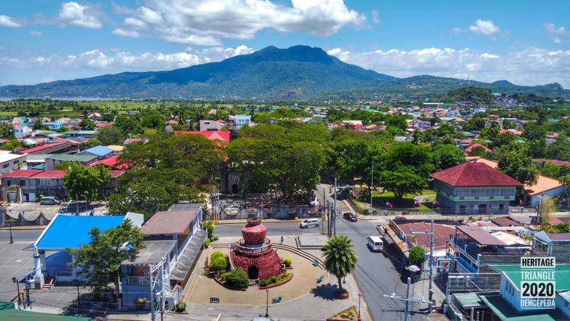

Hi, im Charles Kent Canedo Ponce
I was born on March 12, 2009. Im from the Philipines.
My favourite hobbies are sports, video games, and watching shows.
I go to Heritage Academy Singapore.
Where im from
I am from the Philipines. I was born in Calamba, Laguna. Calamba City is a highly-urbanized city located in Laguna, Philippines. The city is also home to various industries. It is the birthplace and ancestral location of the Philippines' National Hero, José Rizal.
Read more about Calamba.
Heritage Academy
Heritage Academy Singapore is a private educational institution located in Singapore that offers a variety of academic programs for students of all ages. The school is known for its focus on heritage education and its mission to promote a deep understanding and appreciation of Singapore's cultural heritage.
Read more about Heritage Academy.